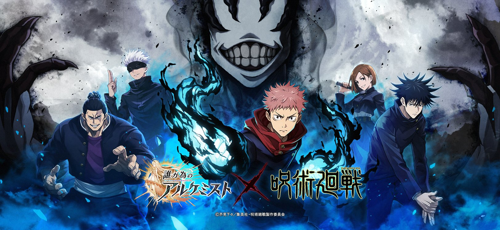

O anime "Jujutsu Kaisen" continua a atrair uma base de fãs em expansão e receber elogios da crítica por sua emocionante ação e enredo envolvente. Baseado no mangá de mesmo nome escrito e ilustrado por Gege Akutami, a adaptação para anime conquistou os corações dos espectadores em todo o mundo desde sua estreia. A trama gira em torno de Yuji Itadori, um estudante do ensino médio com habilidades atléticas excepcionais, que se vê envolvido no mundo perigoso dos feitiços amaldiçoados após entrar em contato com um dedo amaldiçoado que abriga uma maldição mortal. Ele se junta a uma escola de jujutsu para combater maldições e proteger a humanidade dos horrores sobrenaturais.
O ponto forte do anime é a sua ação visceral e bem coreografada, com batalhas frenéticas que mantêm os espectadores à beira de seus assentos. A animação fluida e os efeitos visuais impressionantes contribuem para a sensação de urgência e tensão que permeia cada confronto.
Os personagens cativantes também são um dos destaques do anime. Yuji Itadori é um protagonista carismático e corajoso que rapidamente se torna um favorito dos fãs. Além disso, os membros do elenco secundário, como Megumi Fushiguro, Nobara Kugisaki e Satoru Gojo, têm personalidades distintas que adicionam profundidade à narrativa e proporcionam momentos emocionais. A trilha sonora atmosférica e a direção de arte impressionante contribuem para a criação de uma atmosfera sombria e misteriosa, característica do mundo cheio de maldições e magia do anime.
"Jujutsu Kaisen" também se destaca por sua exploração de temas complexos, como o peso da responsabilidade, amizade e os dilemas éticos que surgem quando se lida com poderes sobrenaturais. Esses elementos elevam o anime além das simples cenas de ação, tornando-o uma experiência completa e envolvente. À medida que a primeira temporada se desenrola e os espectadores são apresentados a novos desafios e inimigos, a empolgação continua a crescer. A segunda temporada já foi confirmada e os fãs aguardam ansiosamente para ver como a história evoluirá. Em suma, "Jujutsu Kaisen" demonstrou ser um sucesso arrebatador, cativando o público com sua ação eletrizante, personagens memoráveis e narrativa envolvente. Se você ainda não embarcou nessa jornada sobrenatural, agora é a hora perfeita para se juntar à legião de fãs que estão entusiasmados com cada novo episódio dessa emocionante série de anime.Os fãs do anime "Jujutsu Kaisen" podem se animar, pois a tão aguardada segunda temporada está a caminho e promete elevar ainda mais a empolgação e o drama que tornaram a série um sucesso instantâneo. Com a primeira temporada conquistando corações e mentes, a expectativa para os próximos episódios está nas alturas. A segunda temporada continuará a história de Yuji Itadori e seus companheiros da escola de jujutsu enquanto enfrentam ameaças sobrenaturais e batalham contra as maldições que ameaçam a humanidade. Os produtores e a equipe de criação têm trabalhado incansavelmente para manter a qualidade e o impacto que tornaram a série tão popular. Uma das promessas mais empolgantes é o desenvolvimento aprofundado dos personagens. Enquanto os espectadores já conhecem e amam Yuji, Megumi, Nobara e Satoru, a segunda temporada oferecerá insights mais profundos sobre suas histórias pessoais, motivações e crescimento como caçadores de maldições. Isso permitirá que os fãs se conectem ainda mais com os protagonistas e compreendam as lutas internas que enfrentam enquanto protegem o mundo dos horrores sobrenaturais. Além disso, a segunda temporada trará novos desafios e inimigos que testarão os limites dos personagens e apresentarão batalhas ainda mais emocionantes e coreografadas. A ação intensa e a animação de alta qualidade são marcas registradas da série, e a segunda temporada não deixará a desejar nesse aspecto.
